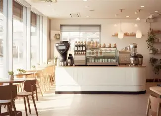

Fresh Food
Enjoy breakfast, lunch, light meals, snacks and desserts prepared for our customers.
Where great food meets exceptional coffee. Start your day with us, enjoy a delicious meal, or take a relaxing break in our welcoming café.

Nola Café is a proudly local café in Walmer, Port Elizabeth. We bring people together through freshly prepared meals, desserts and quality coffee.
View Our Menu Make an EnquiryGood food, great coffee and a welcoming place in Walmer, Port Elizabeth.
Enjoy breakfast, lunch, light meals, snacks and desserts prepared for our customers.
Choose from espresso, cappuccino, latte, iced coffee and other hot and cold drinks.
A comfortable place to relax, connect with others, recharge or get some work done.